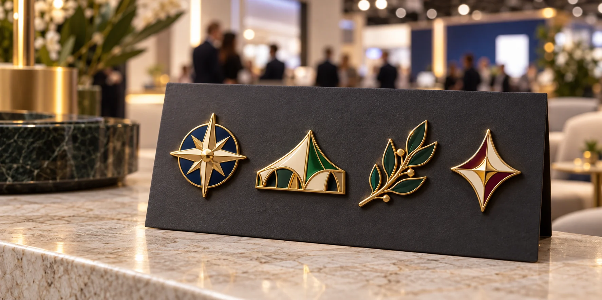

Una serie funciona mejor cuando cada pieza tiene su propio motivo y comparte un lenguaje visual común.
Una colección de pines coleccionables para eventos no consiste simplemente en fabricar varias versiones del mismo logotipo. Para que la serie sea clara y viable, cada diseño debe cumplir una función, encajar con los demás y tener una cantidad prevista antes de iniciar la producción.
El contexto acompaña esta idea, aunque conviene separar tendencia de prueba de demanda: la Asociación de Ferias Españolas, al reproducir el análisis de UFI para 2026, destaca experiencias presenciales más significativas, participación durante todo el recorrido del evento, uso útil de datos y sostenibilidad. Esto no demuestra por sí solo que los asistentes prefieran coleccionar pines; sí ofrece un marco para diseñar una interacción presencial con sentido. Además, IFEMA informó que PROMOGIFT 2026 reunió a más de 7.900 profesionales de 5.400 empresas. Es una referencia del sector promocional, no una medición específica de pines coleccionables. Las fuentes están al final de la guía.
1. Define para qué existe la colección
Antes de dibujar, escribe una frase que describa el objetivo principal. Por ejemplo: “ayudar a los visitantes a descubrir tres áreas del stand” o “crear un recuerdo de la edición anual para clientes y colaboradores”. Una serie puede reforzar conversación, participación o reconocimiento, pero si intenta hacer todo a la vez se vuelve difícil de explicar y medir.
- Público: quién puede conseguir los pines: visitantes, clientes, equipo o socios.
- Acción: qué experiencia concreta acompaña cada pieza.
- Criterio de éxito: participación, recorridos completados, conversaciones o contactos cualificados.
La entrega no tiene que depender de una compra ni de compartir datos personales. Si usas un registro o un QR, explica con claridad qué ocurre al escanearlo y ofrece una alternativa sencilla para quien prefiera no hacerlo.
2. Diseña una serie coherente, no variantes al azar
Para un primer piloto, tres diseños suelen ser un punto de partida manejable: permiten probar una secuencia sin multiplicar demasiado las referencias. No es un estándar de la industria; adapta el número al presupuesto, duración y dinámica del evento. Mantén un elemento común —contorno, borde metálico, paleta o sistema gráfico— y cambia un motivo reconocible en cada pin.
| Pieza | Función | Ejemplo de entrega |
|---|---|---|
| Pin principal | Presenta la identidad de la serie. | Disponible en el punto de bienvenida. |
| Pin de exploración | Representa una actividad, producto o zona. | Se ofrece al participar en una demostración. |
| Pin de cierre | Conmemora completar el recorrido o colaborar. | Se entrega al finalizar, con una regla explicada de antemano. |
Evita que una variante parezca “mejor” solo porque es artificialmente escasa. Si una edición es limitada, comunica con honestidad su cantidad o periodo; si quieres que la serie pueda repetirse, define desde el principio cómo distinguir cada año o convocatoria.
3. Calcula las unidades por diseño
No calcules el pedido multiplicando el aforo total por el número de modelos sin más. Parte de la audiencia que realmente puede participar y estima la demanda de cada referencia por separado. Usa los datos de ediciones anteriores si existen; para un evento nuevo, trata cualquier porcentaje como hipótesis de planificación, no como garantía.
- Estima asistentes relevantes para la activación, no solo entradas registradas.
- Define cuántas personas podrían participar según la ubicación, horario y capacidad del equipo.
- Calcula la previsión de cada diseño: participantes previstos × tasa estimada de recogida de esa variante.
- Suma una reserva acordada para equipo, reposiciones, invitados y envíos posteriores.
Ejemplo ilustrativo: si esperas 500 visitantes adecuados y calculas —solo como hipótesis— que 200 participarán, podrías prever que el 70 % recoja cada uno de tres diseños vinculados a puntos distintos. Eso equivale a 140 unidades por diseño, 420 en total. Si el equipo decide reservar un 10 % para incidencias y entregas posteriores, planificaría 462 unidades. Sustituye estas tasas por tus propios datos cuando los tengas.
Registra también las unidades de cortesía y las que no se entregaron. Así, para la siguiente edición podrás corregir el reparto en vez de repetir una cifra por intuición.
4. Controla coste y complejidad antes de aprobar el arte
Cada silueta, color, acabado y cierre puede añadir decisiones o referencias al pedido. Para una colección fácil de producir y reponer, compara diseños con una base técnica compartida: tamaño parecido, el mismo baño metálico y cierres compatibles. Pregunta al fabricante qué elementos de molde pueden compartirse; depende de las formas y del proceso, así que no lo des por hecho.
Incluye en el brief: medida final en milímetros, cantidad por diseño, colores, acabado, cierre, tarjeta o packaging, fecha de recepción y país de entrega. Revisa el arte a tamaño real; líneas finas y textos pequeños pueden perder legibilidad. Puedes consultar nuestra guía de esmalte blando y esmalte duro, los cierres para pines y los factores que influyen en el precio.
5. Usa la tarjeta para explicar y completar la serie
Una tarjeta común puede mostrar el nombre del evento, el mapa de la colección, el orden de las piezas y una llamada a la acción breve. Si cada pin representa un punto del recorrido, deja espacio para marcarlo o identificarlo. Cuando la numeración sea importante, suele ser más legible imprimirla en la tarjeta que reducir el dibujo del pin.
Un QR puede dirigir a una página móvil con el catálogo, la historia de la serie o un formulario. Usa una URL distinta por evento o campaña si quieres medir visitas, añade una alternativa escrita y no confundas escaneos con contactos o ventas. Para el seguimiento, enlaza esa medición con nuestra guía de ROI del merchandising en ferias B2B.
6. Aprueba todas las muestras antes de fabricar
En una colección, aprobar un solo diseño no valida automáticamente el resto. Comprueba una muestra de cada referencia junto a las demás y revisa:
- que los colores y el acabado metálico parezcan parte de la misma familia;
- que el motivo se entienda al tamaño real y no solo ampliado en pantalla;
- que el cierre quede bien colocado y sea adecuado para el uso previsto;
- que las cantidades por modelo y las tarjetas coincidan con el plan de reparto;
- que el embalaje proteja las piezas y no añada material innecesario.
Solicita la muestra con tiempo para corregir arte, colores o posición del cierre. Si las piezas son distintas, pide confirmar por escrito qué muestra corresponde a cada referencia antes de autorizar la producción completa.
Checklist para pedir una cotización
- Objetivo, público y dinámica de entrega de la colección.
- Diseños finales y cantidad deseada para cada uno.
- Medidas, colores, acabado metálico y tipo de cierre.
- Tarjeta, packaging y cualquier información impresa.
- Fecha del evento, fecha límite de recepción y destino.
- Requisitos de muestra, reserva y reposición.
Para profundizar en el uso general de pines personalizados para eventos o en el diseño de pines para stands, consulta esas guías relacionadas. Para fabricar, explora nuestros pines metálicos personalizados y envía el brief mediante solicitud de cotización.
Preguntas frecuentes
¿Cuántos diseños debe tener una colección de pines para eventos?
No existe una cantidad ideal para todos los eventos. Tres diseños son un piloto fácil de coordinar, pero una actividad breve puede necesitar uno y un programa de varios días puede justificar más. Decide según el recorrido, la audiencia y el presupuesto.
¿Cómo calculo cuántos pines coleccionables fabricar?
Estima la audiencia que participará y la recogida prevista para cada diseño; añade aparte las reservas para equipo, reposiciones o entregas posteriores. Contrasta las hipótesis con datos de eventos anteriores.
¿Dónde conviene indicar que un pin es de edición limitada?
Comunica el límite real y la fecha o convocatoria a la que corresponde. Si la pieza es pequeña, coloca el número de serie en la tarjeta o el packaging para mantener legible el diseño metálico.
Referencias de contexto
- Asociación de Ferias Españolas: cinco tendencias para 2026 (reproduce el análisis de UFI sobre experiencia presencial, participación, datos y sostenibilidad).
- IFEMA MADRID: balance de PROMOGIFT 2026 (asistencia y empresas participantes en el encuentro del sector promocional).
Estas referencias describen el contexto ferial y promocional; las recomendaciones de estructura y cantidades de esta guía son criterios prácticos de planificación, no resultados estadísticos de esos estudios.